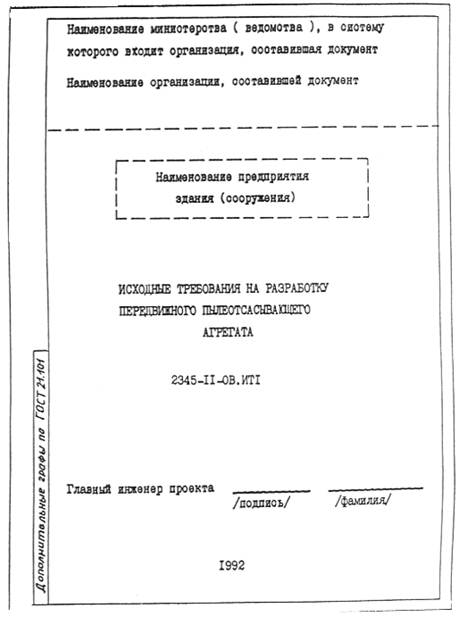

ПОСОБИЕ
ПО ИСХОДНЫМ ТРЕБОВАНИЯМ К РАЗРАБОТКЕ
КОНСТРУКТОРСКОЙ ДОКУМЕНТАЦИИ НА
ОБОРУДОВАНИЕ ИНДИВИДУАЛЬНОГО ИЗГОТОВЛЕНИЯ
(к СНиП 11-01-95)
1996 г.
Предисловие
1. Разработано Государственным предприятием - Центром методологии нормирования и стандартизации в строительстве Минстроя России (ГП ЦНС) с участием специалистов АО «Гипромез» и ГПКНИИ «СантехНИИпроект»
1.1. Пособие является организационно-методическим документом в развитии инструкции СНиП 11-01-95, устанавливающим исходные требования к оборудованию индивидуального изготовления, выдаваемые проектными организациями при проектировании объектов строительства производственного назначения.
1.2. Проектные организации выдают только взаимосвязанные с проектными решениями требования к оборудованию. Остальные требования к оборудованию устанавливаются заказчиком совместно с разработчиком оборудования при составлении технического задания в соответствии с действующими системами разработки и постановки продукции на производство.
1.3. В зависимости от сложности и объемов выдаваемых исходных требований различают следующие виды оборудования:
- простое оборудование индивидуального изготовления, исходные требования к которому не разрабатываются, а содержатся в рабочей документации в виде эскизных чертежей общих видов. К простому оборудованию относятся конструкции и устройства, разрабатываемые в составе рабочей документации.
- сложное оборудование индивидуального изготовления, исходные требования к которому разрабатываются на начальных стадиях проектирования. К сложному оборудованию относится оборудование индивидуального изготовления, разрабатываемое по техническому заданию в соответствии с ГОСТ 15.001 и изготовляемое на машиностроительных предприятиях.
- особо сложное оборудование индивидуального изготовления, исходные требования к которому разрабатываются на предпроектных стадиях проектирования с последующим уточнением на начальных стадиях проектирования. К особо сложному оборудованию относится технологическое оборудование с длительным циклом изготовления, собираемое на месте эксплуатации и разрабатываемое по техническому заданию в соответствии с ГОСТ 15.005.
1.4. В Пособии приведен наибольший объем возможных исходных требований к оборудованию индивидуального изготовления.
Конкретные исходные требования выполняются проектировщиком методом выборки из предложенных настоящим Пособием требований, применительно к конкретному оборудованию с учетом его специфики.
Пример исходных требований к такому оборудованию приведен в приложении В.
1.5. Исходные требования к оборудованию индивидуального изготовления оформляют отдельным документом и передают заказчику для включения в техническое задание на разработку и постановку оборудования на производство в соответствии с ГОСТ 15.001 или ГОСТ 15.005.
1.6. Исходные требования в общем виде состоят из разделов:
- общие сведения к оборудованию;
- технические требования;
- строительные требования;
- требования к монтажу оборудования.
Рекомендуемое содержание разделов исходных требований отражено в разделах 2-5 настоящего Пособия.
1.7. Первым листом исходных требований является титульный лист, выполненный по форме приложения А.
1.8. Применяемые в настоящем Пособии термины и определения приведены в приложении Б.
В разделе исходных требований «Общие сведения по оборудованию» приводят:
1) Основание для разработки, в котором указывают полное наименование документов, на основании которых должна осуществляться разработка и создание оборудования.
2) Полное наименование оборудования и его состав по выполняемым функциям или технологическим операциям:
- наименование, назначение, основные параметры и характеристики основного оборудования, разрабатываемого по всем производственным функциям и технологическим операциям;
- перечень оборудования (основного и вспомогательного, включая подъемно-транспортные средства), его составных частей и систем, входящих в комплект поставки;
- перечень производственных функций и технологических операций, подлежащих выполнению на разрабатываемом оборудовании и обеспечивающих оптимальное ведение технологического процесса;
3) Намечаемые проектные решения по объекту строительства и основные задачи, решаемые при использовании разрабатываемого оборудования (выпуск новой продукции, снижение себестоимости или повышения качества выпускаемой продукции). Здесь же указывают программу и объем производства, параметры готовой продукции, требования к ее качеству и другие сведения.
4) Требования параметры и характеристики оборудования:
- основные параметры оборудования (мощность, производительность, удельные расходы сырья, энергоносителей) и характеристики составных частей оборудования, определяющие возможность достижения заданных показателей качества намечаемой к выпуску продукции;
- соответствие оборудования по параметрам лучшим мировым образцам;
- конструктивные требования к оборудованию и его составным частям, обеспечивающие:
а) полную механизацию трудоемких работ;
б) поузловой метод ремонта оборудования;
в) максимальную унификацию узлов оборудования;
г) оптимальное ведение технологического процесса;
д) обслуживание минимальным штатом персонала.
5) Требования к параметрам энергоносителей:
- основные технические параметры энергоносителей;
- требования к экономному использованию топливно-энергетических ресурсов (в том числе вторичных) и снижению удельных расходов энергоносителей (приводятся прогрессивные показатели энергоемкости производства продукции).
6) Условия эксплуатации оборудования:
- режимы работы оборудования;
- виды обслуживания оборудования (постоянное или периодическое);
- параметры климатических условий (температура, влажность, атмосферное давление, сейсмичность, агрессивность среды, запыленность и другие параметры);
- внешние воздействующие факторы, продолжительность и интенсивность их воздействия.
7) Источники разработки (ссылка на утвержденную технологию, проведенные научно-исследовательские и опытно-конструкторские работы и др.).
8) Требования к патентной чистоте.
3.1. Раздел исходных требований «Технические требования» содержит:
- требования к надежности;
- требования к эксплуатационной безопасности;
- требования к экологической безопасности;
- требования к метрологическому обеспечению;
- требования к автоматизации;
- требования к поставке оборудования;
- требования к разработке конструкторской документации.
Надежность является комплексным свойством, которое в зависимости от назначения оборудования и условий его применения может включать безотказность, долговечность и ремонтопригодность или определенные сочетания этих свойств.
По особо сложному оборудованию, как правило, устанавливается комплексный показатель надежности - коэффициент использования оборудования и показатели долговечности - срок службы или ресурс до капитального ремонта.
Допускается устанавливать значения средней продолжительности (без учета времени на обслуживание и текущие ремонты) пребывания оборудования в работоспособном состоянии и номинальный фонд времени без вычисления коэффициента использования оборудования.
К сложному оборудованию, как правило, предъявляют требования по улучшению показателей безотказности, долговечности и ремонтопригодности относительно лучших отечественных и зарубежных аналогов.
По простому оборудованию требования к надежности не предъявляются.
Эксплуатационная безопасность - безопасность труда, пожарная безопасность и взрывобезопасность.
Требования к эксплуатационной безопасности оборудования содержит:
- требование к применению встроенных в оборудование средств защиты работающих (ограждений, экранов и др.), а также средств информации, предупреждающих о возникновении опасных (в том числе пожаровзрывоопасных) ситуаций и аварийное отключение оборудования;
- требование к применению средств механизации, автоматизации, дистанционного управления и контроля при наличии опасных и вредных производственных факторов;
- требование к герметизации оборудования от выделения вредных веществ и своевременного удаления их из рабочей зоны;
- требование к защите работающих от действия опасных и вредных производственных факторов, сопутствующих принятой технологии или возникающих при нарушении технологического процесса;
- требования к сигнальной окраске оборудования и знакам безопасности;
- требования к снижению уровня вредных факторов до величины, установленной санитарными нормами;
- требования к защите оборудования от перегрузок и ошибочных действий обслуживающего персонала;
- требования к защите оборудования и коммуникаций от распространения пламени и от разрушения при взрыве (требования об установке клапанов, мембран и других огнепреграждающих устройств);
- требование к электростатической искробезопасности;
- требования к обеспечению возможности прохода и доступа к механизмам для обслуживания за счет сооружения для этой цели площадок, лестниц и переходных мостиков.
Экологическая безопасность - охрана атмосферного воздуха, воды и почвы от выбросов загрязняющих веществ производственным оборудованием.
Требования к экологической безопасности оборудования содержат:
- требования к снижению уровня шума и вибрации;
- требования к наличию встроенных местных отсосов и устройств для отвода газопылевыделений и протечек жидкостей, встроенных устройств газопылеочистки;
- требования к предотвращению выбросов загрязняющих веществ в атмосферу и водоемы в аварийных ситуациях и к ликвидации их последствий;
- требования по регулированию выбросов (режимов работы оборудования) в периоды неблагоприятных метеорологических условий.
Основной задачей метрологического обеспечения при проектировании объектов строительства производственного назначения является обеспечение получения достоверных результатов измерения технологических и энергетических параметров для надлежащего контроля качества сырья, материалов и готовой продукции, а также точного учета расходов материалов и энергии.
Метрологические требования к оборудованию содержат:
- требования к оптимальной номенклатуре контролируемых параметров и периодичности их измерений;
- требования к регистрации основных технологических и энергетических параметров в нормальных режимах работы, а также необходимых для анализа параметров в аварийных ситуациях;
- требования к технологически допустимым пределам погрешностей измерений контролируемых параметров и пределам запаздывания информации при измерении;
- требования к обеспечению единства и требуемой точности измерений, а также единообразию средств измерений с максимально возможным сокращением парка приборов за счет централизации контроля и использования вычислительной техники;
- требования к возможности проверки встроенных в оборудование датчиков и приборов без их демонтажа;
- требования по поддержанию заданных режимов работы оборудования посредством использования средств измерений и вычислительной техники;
- требования к метрологическому обеспечению как информационной базе автоматизированных систем управления технологическими процессами (АСУ ТП).
Средства и системы автоматизации должны быть составной частью комплексного проектирования оборудования и входить в комплект поставки оборудования.
Требования к автоматизации оборудования содержат:
- требования к оснащению оборудования электроприводами, бесконтактными приборами, датчиками, регуляторами, программируемыми контролерами, обеспечивающими автоматическое управление механизмами и технологическими операциями в заданной последовательности, а также требования по установке встроенных средств технического диагностирования для безразборной оценки технического состояния элементов оборудования и прогнозирования сроков его отказа;
- требования к режимам работы оборудования и технологическим процессам и операциям;
- требования возможности перехода к ручному управлению при ремонтных и пуско-наладочных работах, а также в аварийных ситуациях;
- требования к управляющим вычислительным комплексам по осуществлению ими основных функций:
а) централизованного контроля параметров технологического процесса и оборудования с индексацией и регистрацией отклонений от заданных значений;
б) сбора, обработки и представления технологической и производственной информации о ходе технологического процесса, состояния оборудования и средств контроля и автоматизации;
в) регистрации и учета расходов энергоносителей;
г) диагностики состояния и неисправностей оборудования и средств контроля и автоматизации;
д) регистрации и учета простоев и их причин;
е) контроля и учета качества продукции;
ж) связи и обмена информацией с автоматизированными системами управления производством (АСУП).
В состав требований к поставке оборудования включают:
- требования по очередности и срокам поставки оборудования;
- требования к комплектности поставки, в том числе по включению в комплект поставки:
а) электрооборудования;
б) систем смазки оборудования, гидравлики и пневматики;
в) средств и систем автоматизации;
г) приборов технологического контроля;
д) вспомогательного оборудования, необходимого для его монтажа и обслуживания, включая подъемно-транспортные средства и грузозахватные устройства;
е) сменного оборудования и запасных частей, необходимых для обеспечения работы оборудования в течение гарантийного срока;
ж) систем пожоротушения и автоматической пожарной сигнализации;
и) фундаментных болтов и закладных деталей;
- требования к оборудованию, собираемому на месте монтажа, по проведению контрольной сборки и обкатке частей оборудования на заводе-изготовителе;
- требования к консервации оборудования;
- требования к маркировке оборудования (указываются с учетом требований монтажепригодности).
Монтажная маркировка оборудования должна содержать следующие данные:
- обозначение сборочных единиц (для негабаритных в сборе блоков);
- мест строповки;
- центра масс;
- базовых поверхностей для выверки;
- стрелку, указывающую направление вращения (движения);
- массу блока или сборной единицы.
Маркировка должна выполнятся на нерабочих поверхностях изделий способами, обеспечивающими четкость изображения, и сохраняться весь период хранения и монтажа, способы и места нанесения маркировки, а также ее содержание для каждого конкретного вида оборудования определяются в конструкторской документации.
Монтажные и сборочные риски должны быть обведены яркой несмываемой краской.
В составе требований указывают стадии и этапы разработки конструкторской документации, на которых предаются проектным организациям через заказчика исходные данные по оборудованию индивидуального изготовления, необходимые для разработки проектной документации.
Сроки и объемы выдачи исходных данных приводятся в договоре на выполнение проектных работ в увязке со сроками разработки оборудования.
Исходные данные по оборудованию индивидуального изготовления выдаются заказчиком проектной организации примерно в следующем объеме:
- данные для проектирования строительной части:
а) здания цеха (габариты оборудования с учетом обслуживающих площадок; габариты проемов в стенах и проездов в зданиях с учетом возможности подачи крупногабаритного оборудования или укрупненного блока к месту установки; нагрузки на перекрытия с учетом нагрузок от монтажных механизмов и транспортных средств при надвижке оборудования на фундаменты и другие данные);
б) фундаментов под оборудование (отметки фундаментов, заглубления каналов, тоннелей, данные по установке закладных частей, настилов, ограждений, данные о нагрузках на фундамент), маркировку и привязку к оборудованию фундаментных болтов;
в) металлоконструкций (обслуживающих площадок, ограждений и других металлоконструкций);
- данные для проектирования коммуникаций воды, сжатого воздуха, пара и других энергоносителей;
- данные для проектирования электрической части;
- данные для проектирования КИПа;
- данные для проектирования противопожарных мероприятий;
- данные для проектирования ремонтно-инструментального хозяйства;
- данные об уровне шума и вибрации, создаваемых разрабатываемым оборудованием;
- режим работы оборудования;
- данные о численности обслуживающего персонала;
- данные в части экологической безопасности по оборудованию, от которого выделяются пары, газы и пыль, а также протечки жидкостей и отходы вредных веществ, в том числе:
а) данные о всех видах выбросов, отходов и случайных стоков с их характеристикой;
б) данные по условию присоединения к отсосу, объему газов, который должен отводиться от встроенного местного отсоса, требуемому разрежению на всасе, а также данные по составу вредных веществ, содержащихся в отсасываемом газе, с учетом не стационарности образования отходов газов и вредных веществ, и рекомендации по утилизации и захоронению вредных веществ после их улавливания в газоочистке (для встроенных устройств газоочистки);
в) данные по общему выделению газа и пыли (вне строенных местных отсосов), их объему и температуре, составу и количеству вредных веществ;
г) данные по объему выбросов загрязняющих веществ в аварийных ситуациях и мероприятиях по ликвидации последствий их воздействия на окружающую среду;
д) данные по показателям других вредных воздействий (теплового воздействия, высокочастотных полей и т.п.);
е) данные по мерам и средствам защиты природной среды от вредных воздействий;
ж) другие данные, необходимые для проектирования.
В состав строительных требований включают:
- требования по условию крепления оборудования к фундаментам (фундаментные болты, закладные детали и др.);
- требования по оснащению опорных частей оборудования конструктивными элементами, уменьшающими воздействия оборудования на фундаменты (виброизоляторы, специальные опоры и др.);
- требования по упрощению конфигураций фундаментов и ограничению их заглублений;
- требования по компоновке оборудования в здании для обеспечения возможности маневрирования грузоподъемных средств и транспорта при монтаже, обслуживании и ремонте оборудования с исключением «мертвых зон».
Монтаж оборудования осуществляется на основе комплектно-блочного метода монтажа, предусматривающего максимальный перенос работ со строительной площадки на предприятия-изготовители этого оборудования, с агрегированием оборудования, трубопроводов и конструкций в блоки на предприятиях поставщиках. Должны быть отражены требования о делении оборудования на комплектные блоки и сборочные единицы и составление перечня поставляемых блоков и сборочных единиц, которые должны быть согласованы заказчиком и организацией, осуществляющей монтаж оборудования.
Монтажные требования к оборудованию должны содержать:
- требования по обеспечению поставки на стройку оборудования комплектными блоками высокой заводской и монтажной готовности;
- требования к оборудованию, собираемому на месте монтажа, по проведению пуско-наладочных работ и испытанию оборудования на месте эксплуатации;
- требования к монтажной оснастке оборудования (специальным монтажным приспособлениям, подъемным и захватывающим устройствам и другим приспособлениям, необходимым для транспортировки, разгрузки и монтажа негабаритных и тяжеловесных блоков оборудования);
- требования по обеспечению шефмонтажных работ предприятиями-изготовителями оборудования;
- требования по расконсервации поставляемого на монтажную площадку оборудования;
- требования по конструкции комплектных блоков, которая должна обеспечивать:
а) компактное расположение оборудования в блоке при минимальном количестве сборных единиц, входящих в состав блока;
б) максимальную массу габарита блока, исходя из габаритов железнодорожного, водного, автомобильного транспорта, а также обеспечения жесткости конструкций;
в) наличие на оборудовании выносных баз для выверки, для обеспечения проектной точности установки оборудования;
г) доступность мест соединения сборочных единиц для механизации работ и контроля качества соединения;
д) разработку блоков совместно с входящими в них комплектующими изделиями (электродвигателями, приборами и средствами автоматизации трубопроводами и обслуживающими металлоконструкциями);
е) наличие в блоке обслуживающих конструкций и возможность использования этих конструкций для безопасного производства работ при установке оборудования в проектное положение.
Наименование организации, составившей документ
Наименование исходных требований на
разработку
оборудования индивидуального изготовления
Обозначение документа
Главный инженер проекта_____________________________________
подпись фамилия
|
Термин |
Определение |
|
Оборудование |
Изделия, применяемые в функциональных системах предприятий, зданий и сооружений. Например, оборудование технологическое, оборудование энергетическое, оборудование санитарно-техническое и др. |
|
Оборудование индивидуального изготовления |
Оборудование, в котором применение изделий единичного и мелкосерийного производства предусматривает разработку конструкторской документации |
|
Изделие |
единица промышленной продукции, количество которой может исчисляться в штуках или экземплярах (ГОСТ 15.895) |
|
Безотказность |
свойство объекта непрерывно сохранять работоспособное состояние в течении некоторого времени или наработки (ГОСТ 27.002) |
|
Долговечность |
свойство объекта сохранять работоспособное состояние до наступления предельного состояния при установленной системе технического обслуживания и ремонта (ГОСТ 27.002) |
|
Ремонтопригодность |
свойство объекта, заключающееся в приспособленности к поддержанию и восстановлению работоспособного состояния путем технического обслуживания и ремонта (ГОСТ 27.002) |
|
Срок службы |
календарная продолжительность эксплуатации от начала эксплуатации объекта до перехода в предельное состояние (ГОСТ 27.002) |
|
Ресурс |
суммарная наработка объекта от начала его эксплуатации до перехода в предельное состояние (ГОСТ 27.002) |
|
Наработка |
продолжительность или объем работы объекта (ГОСТ 27.002) |
|
Предельное состояние |
состояние объекта, при котором дальнейшая эксплуатация недопустима или нецелесообразна (ГОСТ 27.002) |
|
Коэффициент использования технологической системы (оборудования) |
отношение средней продолжительности пребывания оборудования в работоспособном состоянии к значению номинального фонда времени за рассматриваемый период времени (ГОСТ 27.004) |
|
Работоспособное состояние технологической системы (оборудования) |
состояние, при котором значения параметров и показателей качества изготовляемой продукции, производительности, материальных и стоимостных затрат на изготовление продукции соответствует требованиям, установленным в документации (ГОСТ 27.004) |
|
Безопасность труда |
состояние условий труда, при котором исключено воздействие на работающих опасных и вредных производственных факторов (ГОСТ 12.0.002) |
|
Пожарная безопасность |
состояние объекта, при котором с установленной вероятностью исключается возможность возникновения и развитие пожара и воздействия на людей опасных факторов пожара, а также обеспечивается защита материальных ценностей (ГОСТ 12.1.033) |
|
Взрывобезопасность |
состояние производственного процесса, при котором исключается возможность взрыва, или в случае его возникновения предотвращается воздействие на людей вызываемых им опасных и вредных факторов и обеспечивается сохранение материальных ценностей (ГОСТ 12.1.010) |
|
Охрана атмосферного воздуха, воды и почвы |
система мер, направленных на предотвращение и устранение последствий загрязнения воздуха, воды и почвы |

|
1. ОБЩИЕ СВЕДЕНИЯ О РАЗРАБОТКЕ 1.2. Передвижной пылеотсасывающий агрегат (ППА) предназначен для подключения к стационарной системе вакуумной пылеуборки помещений, поверхностей оборудования и металлоконструкций в цехах металлургической промышленности в качестве побудителя тяги, устройства для очистки воздуха от пыли и сборника уловленной пыли. 1.2. Основанием для разработки ППА является протокол технического совещания в Магнитогорском Гипромезе от №. 1.3. ППА разрабатывается впервые. Целью разработки является создание базового образца передвижного пылеотсасывающего агрегата. ППА позволит решить проблему уборки пыли в цехах металлургической промышленности и улучшить санитарно-гигиенические условия в помещениях. 1.4. Источниками информации являются: 1) Рекомендации по проектированию центральных пылесосных установок в помещениях промышленных предприятий. (АЗ-742, Сантехпроект, 1976); 2) Компрессорные машины. Каталог. (М., ЦИНТИхимнефтемаш); 3) Газоочистное оборудование. Рукавные фильтры. Каталог. (М., ЦИНТИхимнефтемаш, 1985) 4) Циклоны с обратным конусом. (Серия 5.904-30). |
|||||||||
|
2345-II-ОВ.ИТI |
|||||||||
|
Изм. |
Кол.уч. |
Лист |
№ док |
Подп. |
Дата |
||||
|
Исходные требования на разработку ППА |
Стадия |
Лист |
Листов |
||||||
|
1 |
9 |
||||||||
|
Наименование организации |
|||||||||
|
2. ТЕХНИЧЕСКИЕ ТРЕБОВАНИЯ 2.1. Передвижной пылеотсасывающий агрегат состоит из самоходного шасси и пылеотсасывающей установки (Рис. 1) 2.2. Самоходное шасси должно обеспечивать возможность передвижения агрегата по цеху, не являться источником выделения вредных веществ в цех в количествах, превышающих санитарные нормы, иметь грузоподъемность, обеспечивающую передвижение агрегата при полной загрузке пылью. Исходные требования на разработку самоходного шасси выдает заказчик. 2.3. В состав пылеотсасывающей установки (Рис. 2) входят: 1) побудитель тяги с шумоглушителями и шумоизолирующим укрытием; 2) кабельный барабан с гибким соединительным кабелем длиной 25 м; 3) рукавный фильтр с импульсной продувкой сжатым воздухом и автоматической регенерацией; 4) группа из четырех циклонов с бункером; 5) устройство для подсоединения ППА к системе вакуумной пылеуборки; 6) компрессор с ресивером и предохранительным клапаном; 7) электрический распределительный шкаф с системой управления; 8) основная рама с гидравлическим устройством опрокидывания; 9) вспомогательная рама. Основные габаритные размеры пылеотсасывающей установки, мм: |
|||||||
|
Лист |
|||||||
|
2 |
|||||||
|
Изм. |
Кол.уч. |
Лист |
№ док |
Подп. |
Дата |
||
|
длина - 5700 ширина - 2400 высота - 2800 2.4. Побудитель тяги предназначен для создания разрежения в системе вакуумной пылеуборки. В качестве побудителя тяги может быть использован компрессор шестеренчатый типа - 2АФ57Э52С по ТУ 26-12-615-81 компрессорного завода «Мелитопольхолодмаш» с электродвигателем 4А180М4, № = 30 кВт, n = 970 об/мин. Компрессор следует установить на специальной раме с амортизаторами, которая должная крепиться к вспомогательной раме ППА. В пылеотсасывающей установке предусмотреть компрессор с вертикальным направлением потока. Для борьбы с шумом компрессор в шумоизолирующем укрытии и на нагнетательной стороне компрессора предусмотреть трубчатые глушители шума. На всасывающей стороне предусмотреть гибкую вставку. Охлаждение побудителя тяги масляное. Рекомендуемое масло для шестерни - минеральное масло И-30А, для подшипников - консистентная смазка ВНИИНП - 242. ОСНОВНЫЕ ПАРАМЕТРЫ Производительность 1400 м3/ч Разрежение 40 кПа Допустимый уровень шума 80 дБ Масса побудителя тяги с шумоизолирующим укрытием и глушителями шума не более 1500 кг |
|||||||
|
Лист |
|||||||
|
3 |
|||||||
|
Изм. |
Кол.уч. |
Лист |
№ док |
Подп. |
Дата |
||
|
2.5. Кабельный барабан с гибким соединительным кабелем длиной 25 м предназначен для подключения побудителя тяги, компрессора и системы управления к электрической сети. Кабельный барабан установить на вспомогательной раме. 2.6. Рукавный фильтр с импульсной продувкой системы сжатым воздухом и автоматической регенерацией предназначен для очистки отсасываемого воздуха от пыли в качестве второй ступени очистки. Рукавный фильтр состоит из корпуса, фильтрующих рукавов, закрепленных на рукавной плите, секций клапанов и приборов управления импульсной продувкой, обеспечивающих регенерацию рукавов в автоматическом режиме. В корпусе фильтра предусмотреть люк для осмотра. В конструкции рукавного фильтра предусмотреть возможность замены рукавов. В воздушном коллекторе очищенного воздуха установить кассетный фильтр для защиты компрессора от попадания пыли в случае разрыва рукавов. Предусмотреть люки для демонтажа и осмотра кассетного фильтра. Установить датчики перепада давления до и после фильтра для контроля за работой фильтра. На трубопроводе очищенного воздуха предусмотреть накидное разъемное соединение диаметром 175 мм, обеспечивающее разъединение подвижной части установки от стационарной. Накидное разъемное соединение должно обеспечивать герметичность соединения при работе установки. Бункер рукавного фильтра и бункер циклонов имеют общую стенку, в |
|||||||
|
Лист |
|||||||
|
4 |
|||||||
|
Изм. |
Кол.уч. |
Лист |
№ док |
Подп. |
Дата |
||
|
которой следует предусмотреть отверстие размером 1400 ´ 1400 для сброса пыли из бункера рукавного фильтра в бункер циклонов. Отверстие должно закрываться клапаном, который следует установить со стороны бункера циклонов. Клапан необходимо закрепить шарнирно сверху. При работе пылеотсасывающей установки клапан прижимается к стенке бункера рукавного фильтра за счет разности давления в бункерах. При опрокидывании рукавного фильтра и циклонов для выгрузки пыли клапан откидывается и пыль сбрасывается в бункер циклонов. ОСНОВНЫЕ ПАРАМЕТРЫ Площадь фильтрующей поверхности 20 - 21 м2 Количество фильтрующих рукавов 48 - 50 шт. Диаметр рукава 135 мм Разрежение в фильтре не более 60 кПа Температура очищаемого воздуха не более 80 °С Концентрация пыли в очищаемом воздухе не более 300 г/м3 Степень очистки воздуха 99 % Производительность 1400 м3/ч Допустимый уровень шума не более 80 дБ Габаритные размеры, мм не более 1600´1400´2400 Расход сжатого воздуха на регенерацию 1 м3/ч 2.7. Группа из четырех циклонов с бункером предназначена для очистки запыленного воздуха в качестве первой ступени очистки. |
|||||||
|
Лист |
|||||||
|
5 |
|||||||
|
Изм. |
Кол.уч. |
Лист |
№ док |
Подп. |
Дата |
||
|
К установке следует принять циклоны с обратным конусом № 2 по серии 5.904-30. Для выгрузки пыли из бункера необходимо предусмотреть люк размером 2400´500 мм. ОСНОВНЫЕ ПАРАМЕТРЫ Производительность 1400 м3/ч Разрежение в циклонах не более 60 кПа Объем бункера 5,7 м3 Габаритные размеры бункера, мм не более 2000´2400´1200 Габаритные размеры группы из четырех циклонов, (мм): длина - 2000 ширина - 2400 высота - 2400 Масса группы из четырех циклонов с бункером (без пыли) не более 1500 кг 2.8. Компрессор с ресивером и предохранительным клапаном предназначен для получения сжатого воздуха, используемого в системе импульсной продувки рукавных фильтров. Компрессор с ресивером установить на вспомогательную раму. ОСНОВНЫЕ ПАРАМЕТРЫ Производительность 1 м3/ч Давление 0,3 - 0,6 МПа |
|||||||
|
Лист |
|||||||
|
6 |
|||||||
|
Изм. |
Кол.уч. |
Лист |
№ док |
Подп. |
Дата |
||
|
2.9. Электрический распределительный шкаф предназначен для размещения контрольно-измерительных приборов и систем управления работой пылеотсасывающей установки. 2.10. Основная рама с гидравлическим устройством опрокидывания предусмотрена для крепления рукавного фильтра и группы из четырех циклонов. Основная рама одним концом шарнирно соединяется с вспомогательной рамой, другим опирается на вспомогательную раму через резиновые амортизаторы и крепится к гидравлическому устройству опрокидывания. Угол подъема основной рамы должен быть не менее 60°. 2.11. Вспомогательная рама предназначена для размещения всех составных частей пылеотсасывающей установки. Вспомогательная рама крепится к раме самоходного шасси. 2.12. Для управления и контроля за работой пылеотсасывающей установки предусмотреть приборы контроля: 1) перепада давления в рукавных фильтрах; 2) разрежения на всасывающей стороне побудителя тяги; 3) уровня пыли в бункерах рукавного фильтра и группы из четырех циклонов. Необходимые приборы управления и контроля за работой компрессора с ресивером, систем подачи сжатого воздуха и смазки выдает заказчик. |
|||||||
|
Лист |
|||||||
|
7 |
|||||||
|
Изм. |
Кол.уч. |
Лист |
№ док |
Подп. |
Дата |
||
СОДЕРЖАНИЕ